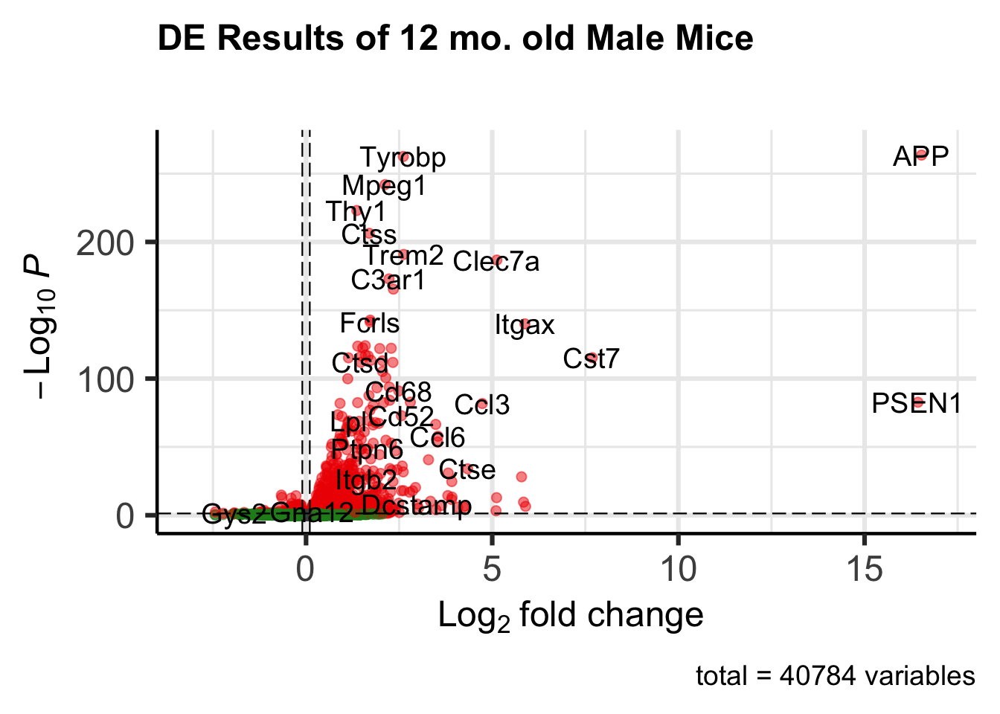

if (!requireNamespace("BiocManager", quietly = TRUE))
install.packages("BiocManager")
BiocManager::install(c("DESeq2", "org.Mm.eg.db","GO.db", "EnhancedVolcano", "AnnotationDbi"))
#install.packages(c("tidyverse", "ggplot2", "dplyr"))Differential Analysis of 5xFAD mouse models
Author: Laura Heath, adapted from code written by Ravi Pandey, Jackson Laboratories
The following data is obtained from The Jax.IU.Pitt_5XFAD Study (Jax.IU.Pitt_5XFAD), found here: syn21983020 and here: https://adknowledgeportal.synapse.org/Explore/Studies/DetailsPage/StudyData?Study=syn21983020
The following code will take the raw counts matrix you uploaded in the first part of the workshop (Portal_workshop_5xFADdata.Rmd) and the metadata file you created that also contains the specimen IDs to run a basic differential expression analysis on a single time point (12 months) in male mice. You can amend the code to compare wild type and 5XFAD mice from either sex, at any time point.
We will need several new packages from Bioconductor to run this analysis
library(DESeq2)Loading required package: S4VectorsLoading required package: stats4Loading required package: BiocGenerics
Attaching package: 'BiocGenerics'The following objects are masked from 'package:stats':
IQR, mad, sd, var, xtabsThe following objects are masked from 'package:base':
anyDuplicated, aperm, append, as.data.frame, basename, cbind,
colnames, dirname, do.call, duplicated, eval, evalq, Filter, Find,
get, grep, grepl, intersect, is.unsorted, lapply, Map, mapply,
match, mget, order, paste, pmax, pmax.int, pmin, pmin.int,
Position, rank, rbind, Reduce, rownames, sapply, setdiff, sort,
table, tapply, union, unique, unsplit, which.max, which.min
Attaching package: 'S4Vectors'The following objects are masked from 'package:base':
expand.grid, I, unnameLoading required package: IRangesLoading required package: GenomicRangesLoading required package: GenomeInfoDbLoading required package: SummarizedExperimentLoading required package: MatrixGenericsLoading required package: matrixStats
Attaching package: 'MatrixGenerics'The following objects are masked from 'package:matrixStats':
colAlls, colAnyNAs, colAnys, colAvgsPerRowSet, colCollapse,
colCounts, colCummaxs, colCummins, colCumprods, colCumsums,
colDiffs, colIQRDiffs, colIQRs, colLogSumExps, colMadDiffs,
colMads, colMaxs, colMeans2, colMedians, colMins, colOrderStats,
colProds, colQuantiles, colRanges, colRanks, colSdDiffs, colSds,
colSums2, colTabulates, colVarDiffs, colVars, colWeightedMads,
colWeightedMeans, colWeightedMedians, colWeightedSds,
colWeightedVars, rowAlls, rowAnyNAs, rowAnys, rowAvgsPerColSet,
rowCollapse, rowCounts, rowCummaxs, rowCummins, rowCumprods,
rowCumsums, rowDiffs, rowIQRDiffs, rowIQRs, rowLogSumExps,
rowMadDiffs, rowMads, rowMaxs, rowMeans2, rowMedians, rowMins,
rowOrderStats, rowProds, rowQuantiles, rowRanges, rowRanks,
rowSdDiffs, rowSds, rowSums2, rowTabulates, rowVarDiffs, rowVars,
rowWeightedMads, rowWeightedMeans, rowWeightedMedians,
rowWeightedSds, rowWeightedVarsLoading required package: BiobaseWelcome to Bioconductor
Vignettes contain introductory material; view with
'browseVignettes()'. To cite Bioconductor, see
'citation("Biobase")', and for packages 'citation("pkgname")'.
Attaching package: 'Biobase'The following object is masked from 'package:MatrixGenerics':
rowMediansThe following objects are masked from 'package:matrixStats':
anyMissing, rowMedianslibrary(ggplot2)
library(AnnotationDbi)
library(org.Mm.eg.db)library(GO.db)library(EnhancedVolcano)Loading required package: ggrepellibrary(tidyverse)── Attaching core tidyverse packages ──────────────────────── tidyverse 2.0.0 ──
✔ dplyr 1.1.0 ✔ readr 2.1.4
✔ forcats 1.0.0 ✔ stringr 1.5.0
✔ lubridate 1.9.2 ✔ tibble 3.1.8
✔ purrr 1.0.1 ✔ tidyr 1.3.0── Conflicts ────────────────────────────────────────── tidyverse_conflicts() ──
✖ lubridate::%within%() masks IRanges::%within%()
✖ dplyr::collapse() masks IRanges::collapse()
✖ dplyr::combine() masks Biobase::combine(), BiocGenerics::combine()
✖ dplyr::count() masks matrixStats::count()
✖ dplyr::desc() masks IRanges::desc()
✖ tidyr::expand() masks S4Vectors::expand()
✖ dplyr::filter() masks stats::filter()
✖ dplyr::first() masks S4Vectors::first()
✖ dplyr::lag() masks stats::lag()
✖ ggplot2::Position() masks BiocGenerics::Position(), base::Position()
✖ purrr::reduce() masks GenomicRanges::reduce(), IRanges::reduce()
✖ dplyr::rename() masks S4Vectors::rename()
✖ lubridate::second() masks S4Vectors::second()
✖ lubridate::second<-() masks S4Vectors::second<-()
✖ dplyr::select() masks AnnotationDbi::select()
✖ dplyr::slice() masks IRanges::slice()
ℹ Use the ]8;;http://conflicted.r-lib.org/conflicted package]8;; to force all conflicts to become errorslibrary(dplyr)
library(synapser)
New synapser version detected:
You are using synapser version 1.0.59.
synapser version 1.1.0.119 is detected at http://ran.synapse.org.
To upgrade to the latest version of synapser, please run the following command:
install.packages("synapser", repos="http://ran.synapse.org")
TERMS OF USE NOTICE:
When using Synapse, remember that the terms and conditions of use require that you:
1) Attribute data contributors when discussing these data or results from these data.
2) Not discriminate, identify, or recontact individuals or groups represented by the data.
3) Use and contribute only data de-identified to HIPAA standards.
4) Redistribute data only under these same terms of use.You can use the original counts matrix you uploaded in the Portal_workshop_5XFADdata.Rmd, along with the subsetted metadata file with covariates of interest (‘covars’)
synLogin()NULLcounts_id <- "syn22108847"
synGet(counts_id, downloadLocation = "files/")File(consortium=['MODEL-AD'], dataType=['geneExpression'], isModelSystem=[False], name='htseqcounts_5XFAD.txt', path='/Users/alinden/Desktop/sage-repos/originals/ADPortalWorkshops/files/htseqcounts_5XFAD.txt', tissue=['right cerebral hemisphere'], id='syn22108847', modifiedOn='2023-05-19T20:43:30.219Z', study=['Jax.IU.Pitt_5XFAD'], createdBy='3347528', resourceType=['experimentalData'], versionLabel='2', isLatestVersion=True, cacheDir='/Users/alinden/Desktop/sage-repos/originals/ADPortalWorkshops/files', modifiedBy='3427512', nucleicAcidSource=['bulk cell'], grant=['U54AG054345'], fileFormat=['txt'], dataFileHandleId='75357567', etag='b73bc1b8-2af8-48ce-a51b-ea6ded5624b5', versionNumber=2, files=['htseqcounts_5XFAD.txt'], createdOn='2020-05-31T02:43:27.937Z', synapseStore=True, isMultiSpecimen=[False], _file_handle={'id': '75357567', 'etag': '409fa46a-4f31-4cf8-8133-e3deb6511437', 'createdBy': '3417412', 'createdOn': '2021-04-26T08:20:13.000Z', 'modifiedOn': '2021-04-26T08:20:13.000Z', 'concreteType': 'org.sagebionetworks.repo.model.file.S3FileHandle', 'contentType': 'text/plain', 'contentMd5': '72e2ed951e541c5ba93a37465f056d7a', 'fileName': 'htseqcounts_5XFAD.txt', 'storageLocationId': 41208, 'contentSize': 12803625, 'status': 'AVAILABLE', 'bucketName': 'ad-knowledge-portal-main', 'key': 'data/3417412/60d0db76-ca8c-458d-91fc-b4b9f9dd470a/htseqcounts_5XFAD.txt', 'previewId': '75357569', 'isPreview': False, 'externalURL': None}, concreteType='org.sagebionetworks.repo.model.FileEntity', parentId='syn22323073', assay=['rnaSeq'], dataSubtype=['processed'], modelSystemType=['animal'], organ=['brain'])counts <- read.delim("files/htseqcounts_5XFAD.txt", check.names = FALSE)
head(counts) gene_id 32043rh 32044rh 32046rh 32047rh 32048rh 32049rh 32050rh
1 ENSG00000080815 22554 0 0 0 16700 0 0
2 ENSG00000142192 344489 4 0 1 260935 6 8
3 ENSMUSG00000000001 5061 3483 3941 3088 2756 3067 2711
4 ENSMUSG00000000003 0 0 0 0 0 0 0
5 ENSMUSG00000000028 208 162 138 127 95 154 165
6 ENSMUSG00000000031 44 17 14 28 23 24 14
32052rh 32053rh 32057rh 32059rh 32061rh 32062rh 32065rh 32067rh 32068rh
1 19748 14023 0 17062 0 15986 10 0 18584
2 337456 206851 1 264748 0 252248 172 4 300398
3 3334 3841 4068 3306 4076 3732 3940 4238 3257
4 0 0 0 0 0 0 0 0 0
5 124 103 164 116 108 134 204 239 148
6 30 24 35 41 40 32 34 47 22
32070rh 32073rh 32074rh 32075rh 32078rh 32081rh 32088rh 32640rh 46105rh
1 1 0 0 22783 17029 16626 15573 12721 4
2 4 2 9 342655 280968 258597 243373 188818 19
3 3351 3449 4654 4844 3132 3334 3639 3355 4191
4 0 0 0 0 0 0 0 0 0
5 159 167 157 211 162 149 160 103 158
6 52 21 13 58 18 35 19 43 103
46106rh 46107rh 46108rh 46109rh 46110rh 46111rh 46112rh 46113rh 46115rh
1 0 0 0 0 0 17931 0 19087 0
2 0 0 1 5 1 293409 8 273704 1
3 3058 4265 3248 3638 3747 3971 3192 3805 3753
4 0 0 0 0 0 0 0 0 0
5 167 199 113 168 175 203 158 108 110
6 36 32 12 24 41 52 79 33 83
46121rh 46131rh 46132rh 46134rh 46138rh 46141rh 46142rh 46862rh 46863rh
1 0 0 12703 18833 0 18702 17666 0 14834
2 0 1 187975 285048 0 284499 250600 0 218494
3 4134 3059 3116 3853 3682 2844 3466 3442 3300
4 0 0 0 0 0 0 0 0 0
5 179 137 145 183 171 138 88 154 157
6 53 14 19 34 38 73 46 30 37
46865rh 46866rh 46867rh 46868rh 46871rh 46872rh 46873rh 46874rh 46875rh
1 10546 10830 10316 10638 15248 0 0 11608 11561
2 169516 152769 151732 190150 229063 6 1 165941 171303
3 3242 3872 3656 3739 3473 3154 5510 3657 4121
4 0 0 0 0 0 0 0 0 0
5 131 152 152 155 140 80 240 148 112
6 74 36 21 66 27 30 43 31 28
46876rh 46877rh 46878rh 46879rh 46881rh 46882rh 46883rh 46884rh 46885rh
1 0 0 12683 15613 0 14084 20753 0 0
2 0 2 183058 216122 0 199448 306081 0 5
3 3422 3829 3996 4324 2592 2606 4600 2913 3614
4 0 0 0 0 0 0 0 0 0
5 147 166 169 215 115 101 174 127 151
6 20 26 43 43 21 27 48 29 29
46886rh 46887rh 46888rh 46889rh 46890rh 46891rh 46892rh 46893rh 46895rh
1 16639 16072 0 16680 13367 0 25119 92 0
2 242543 258061 0 235530 196721 0 371037 1116 0
3 3294 3719 3899 4173 4008 3037 5967 3459 4262
4 0 0 0 0 0 0 0 0 0
5 139 128 210 127 156 116 260 161 189
6 21 34 25 45 67 24 60 45 41
46896rh 46897rh
1 15934 0
2 235343 6
3 3923 3486
4 0 0
5 179 117
6 58 28Upload the three metadata files we need, in order to join specimen IDs from the counts matrix to individual IDs in the clinical metadata (Note: you could use the ‘covars’ file you created in the previous exercise)
#upload the three metadata files we need and join them (or use 'covars' from Portal_workshop_5XFADdata.Rmd)
rna_metaID <- "syn22110328"
synGet(rna_metaID, downloadLocation = "files/")File(consortium=['MODEL-AD'], path='/Users/alinden/Desktop/sage-repos/originals/ADPortalWorkshops/files/Jax.IU.Pitt_5XFAD_assay_RNAseq_metadata.csv', createdOn='2020-05-31T20:38:13.220Z', dataType=['geneExpression'], metadataType=['assay'], isModelSystem=[False], files=['Jax.IU.Pitt_5XFAD_assay_RNAseq_metadata.csv'], study=['Jax.IU.Pitt_5XFAD'], createdBy='3347528', fileFormat=['csv'], isLatestVersion=True, cacheDir='/Users/alinden/Desktop/sage-repos/originals/ADPortalWorkshops/files', name='Jax.IU.Pitt_5XFAD_assay_RNAseq_metadata.csv', versionLabel='4', modifiedBy='3427512', grant=['U54AG054345'], modifiedOn='2023-05-19T20:43:30.418Z', versionNumber=4, _file_handle={'id': '75357585', 'etag': '9c34f6ea-5e65-440c-a4cb-5eeb985bd947', 'createdBy': '3417412', 'createdOn': '2021-04-26T08:20:25.000Z', 'modifiedOn': '2021-04-26T08:20:25.000Z', 'concreteType': 'org.sagebionetworks.repo.model.file.S3FileHandle', 'contentType': 'text/csv', 'contentMd5': '7bfeb136cc94cae8cebfbd4a0f2e72cb', 'fileName': 'Jax.IU.Pitt_5XFAD_assay_RNAseq_metadata.csv', 'storageLocationId': 41208, 'contentSize': 5476, 'status': 'AVAILABLE', 'bucketName': 'ad-knowledge-portal-main', 'key': 'data/3417412/38a12b9b-9744-4f2c-bcfe-fdfa377cfb9a/Jax.IU.Pitt_5XFAD_assay_RNAseq_metadata.csv', 'previewId': '75357590', 'isPreview': False, 'externalURL': None}, etag='69fc8a06-b928-4f37-969d-47c7aa4c1ca1', id='syn22110328', resourceType=['metadata'], synapseStore=True, concreteType='org.sagebionetworks.repo.model.FileEntity', parentId='syn21983022', dataFileHandleId='75357585', assay=['rnaSeq'], modelSystemType=['animal'])rna_meta <- read_csv("files/Jax.IU.Pitt_5XFAD_assay_RNAseq_metadata.csv", show_col_types = FALSE)
bio_metaID <- "syn22103213"
synGet(bio_metaID, downloadLocation = "files/")File(consortium=['MODEL-AD'], isModelSystem=[False], path='/Users/alinden/Desktop/sage-repos/originals/ADPortalWorkshops/files/Jax.IU.Pitt_5XFAD_biospecimen_metadata.csv', study=['Jax.IU.Pitt_5XFAD'], files=['Jax.IU.Pitt_5XFAD_biospecimen_metadata.csv'], fileFormat=['csv'], metadataType=['biospecimen'], modifiedOn='2023-05-19T20:43:19.849Z', _file_handle={'id': '75356382', 'etag': '2d04cb02-73ed-4702-b646-5ce724fb2985', 'createdBy': '3417412', 'createdOn': '2021-04-26T05:54:39.000Z', 'modifiedOn': '2021-04-26T05:54:39.000Z', 'concreteType': 'org.sagebionetworks.repo.model.file.S3FileHandle', 'contentType': 'text/csv', 'contentMd5': 'a7d5a4733df4948daaad8078dfd9b835', 'fileName': 'Jax.IU.Pitt_5XFAD_biospecimen_metadata.csv', 'storageLocationId': 41208, 'contentSize': 36929, 'status': 'AVAILABLE', 'bucketName': 'ad-knowledge-portal-main', 'key': 'data/3417412/d3fc54fe-0bd9-4a0b-b64f-e08da782c25a/Jax.IU.Pitt_5XFAD_biospecimen_metadata.csv', 'previewId': '75356385', 'isPreview': False, 'externalURL': None}, cacheDir='/Users/alinden/Desktop/sage-repos/originals/ADPortalWorkshops/files', isLatestVersion=True, name='Jax.IU.Pitt_5XFAD_biospecimen_metadata.csv', modifiedBy='3427512', grant=['U54AG054345'], etag='248c214b-5d5c-4e36-9aa6-127e9180e412', dataFileHandleId='75356382', id='syn22103213', resourceType=['metadata'], synapseStore=True, createdOn='2020-05-28T17:36:33.824Z', concreteType='org.sagebionetworks.repo.model.FileEntity', parentId='syn21983022', createdBy='3346982', versionLabel='3', modelSystemType=['animal'], versionNumber=3)bio_meta <- read_csv("files/Jax.IU.Pitt_5XFAD_biospecimen_metadata.csv", show_col_types = FALSE)
ind_metaID <- "syn22103212"
synGet(ind_metaID, downloadLocation = "files/")File(study=['Jax.IU.Pitt_5XFAD'], etag='b2c027b9-c62a-444b-ade1-abca9c99da2a', dataFileHandleId='124762661', isLatestVersion=True, cacheDir='/Users/alinden/Desktop/sage-repos/originals/ADPortalWorkshops/files', modifiedOn='2023-06-01T18:05:16.052Z', versionLabel='4', name='Jax.IU.Pitt_5XFAD_individual_metadata.csv', modifiedBy='3427512', versionNumber=4, metadataType=['individual'], createdOn='2020-05-28T17:36:32.156Z', resourceType=['metadata'], synapseStore=True, files=['Jax.IU.Pitt_5XFAD_individual_metadata(1).csv'], _file_handle={'id': '124762661', 'etag': 'fbf74349-e88e-4dbb-b5af-8f30c007665b', 'createdBy': '3427512', 'createdOn': '2023-05-19T20:43:50.000Z', 'modifiedOn': '2023-05-19T20:43:50.000Z', 'concreteType': 'org.sagebionetworks.repo.model.file.S3FileHandle', 'contentType': 'text/csv', 'contentMd5': '7b66876f4306b102691f7f8eee781f83', 'fileName': 'Jax.IU.Pitt_5XFAD_individual_metadata.csv', 'storageLocationId': 41208, 'contentSize': 39725, 'status': 'AVAILABLE', 'bucketName': 'ad-knowledge-portal-main', 'key': 'data/3427512/328ad101-e935-43d1-9f01-aa0985bbb14d/Jax.IU.Pitt_5XFAD_individual_metadata.csv', 'previewId': '124762662', 'isPreview': False, 'externalURL': None}, concreteType='org.sagebionetworks.repo.model.FileEntity', path='/Users/alinden/Desktop/sage-repos/originals/ADPortalWorkshops/files/Jax.IU.Pitt_5XFAD_individual_metadata(1).csv', parentId='syn21983022', createdBy='3346982', id='syn22103212')ind_meta <- read_csv("files/Jax.IU.Pitt_5XFAD_individual_metadata.csv", show_col_types = FALSE)Join the three metadata files by IDs in common
#join the metadata files
joined_meta <- rna_meta %>% #start with the rnaseq assay metadata
left_join(bio_meta, by = "specimenID") %>% #join rows from biospecimen that match specimenID
left_join(ind_meta, by = "individualID") # join rows from individual that match individualID
joined_meta# A tibble: 72 × 56
speci…¹ platf…² RIN rnaBa…³ libra…⁴ seque…⁵ libra…⁶ libra…⁷ isStr…⁸ readS…⁹
<chr> <chr> <lgl> <dbl> <dbl> <dbl> <chr> <lgl> <lgl> <lgl>
1 32043rh Illumi… NA 1 1 1 polyAs… NA FALSE NA
2 32044rh Illumi… NA 1 1 1 polyAs… NA FALSE NA
3 32046rh Illumi… NA 1 1 1 polyAs… NA FALSE NA
4 32047rh Illumi… NA 1 1 1 polyAs… NA FALSE NA
5 32049rh Illumi… NA 1 1 1 polyAs… NA FALSE NA
6 32057rh Illumi… NA 1 1 1 polyAs… NA FALSE NA
7 32061rh Illumi… NA 1 1 1 polyAs… NA FALSE NA
8 32065rh Illumi… NA 1 1 1 polyAs… NA FALSE NA
9 32067rh Illumi… NA 1 1 1 polyAs… NA FALSE NA
10 32070rh Illumi… NA 1 1 1 polyAs… NA FALSE NA
# … with 62 more rows, 46 more variables: runType <chr>, readLength <dbl>,
# individualID <dbl>, specimenIdSource <chr>, organ <chr>, tissue <chr>,
# BrodmannArea <lgl>, sampleStatus <chr>, tissueWeight <lgl>,
# tissueVolume <lgl>, nucleicAcidSource <lgl>, cellType <lgl>,
# fastingState <lgl>, isPostMortem <lgl>, samplingAge <lgl>,
# individualIdSource <chr>, species <chr>, sex <chr>, genotype <chr>,
# genotypeBackground <chr>, room <chr>, litter <chr>, matingID <chr>, …Create a timepoint variable (Months since birth)
library(lubridate)
# convert columns of strings to month-date-year format
joined_meta_time <- joined_meta %>%
mutate(dateBirth = mdy(dateBirth), dateDeath = mdy(dateDeath)) %>%
# create a new column that subtracts dateBirth from dateDeath in days, then divide by 30 to get months
mutate(timepoint = as.numeric(difftime(dateDeath, dateBirth, units ="days"))/30) %>%
# convert numeric ages to timepoint categories
mutate(timepoint = case_when(timepoint > 10 ~ "12 mo",
timepoint < 10 & timepoint > 5 ~ "6 mo",
timepoint < 5 ~ "4 mo"))
# check that the timepoint column looks ok (should be 6 mice in each group)
joined_meta_time %>%
dplyr::group_by(sex, genotype, timepoint) %>%
dplyr::count()# A tibble: 12 × 4
# Groups: sex, genotype, timepoint [12]
sex genotype timepoint n
<chr> <chr> <chr> <int>
1 female 5XFAD_carrier 12 mo 6
2 female 5XFAD_carrier 4 mo 6
3 female 5XFAD_carrier 6 mo 6
4 female 5XFAD_noncarrier 12 mo 6
5 female 5XFAD_noncarrier 4 mo 6
6 female 5XFAD_noncarrier 6 mo 6
7 male 5XFAD_carrier 12 mo 6
8 male 5XFAD_carrier 4 mo 6
9 male 5XFAD_carrier 6 mo 6
10 male 5XFAD_noncarrier 12 mo 6
11 male 5XFAD_noncarrier 4 mo 6
12 male 5XFAD_noncarrier 6 mo 6Select the covariates needed for the analysis
covars <- joined_meta_time %>%
dplyr::select(individualID, specimenID, sex, genotype, timepoint)PICK UP HERE TO REUSE DATAFRAMES GENERATED IN 5XFAD_data_R_tutorial.qmd
# coerce covars into a dataframe, label the rows by specimenID, and check the result
covars <- as.data.frame(covars)
rownames(covars) <- covars$specimenID
covars individualID specimenID sex genotype timepoint
32043rh 32043 32043rh female 5XFAD_carrier 12 mo
32044rh 32044 32044rh male 5XFAD_noncarrier 12 mo
32046rh 32046 32046rh male 5XFAD_noncarrier 12 mo
32047rh 32047 32047rh male 5XFAD_noncarrier 12 mo
32049rh 32049 32049rh female 5XFAD_noncarrier 12 mo
32057rh 32057 32057rh female 5XFAD_noncarrier 12 mo
32061rh 32061 32061rh male 5XFAD_noncarrier 12 mo
32065rh 32065 32065rh female 5XFAD_noncarrier 12 mo
32067rh 32067 32067rh female 5XFAD_noncarrier 12 mo
32070rh 32070 32070rh female 5XFAD_noncarrier 12 mo
32073rh 32073 32073rh male 5XFAD_noncarrier 12 mo
32074rh 32074 32074rh male 5XFAD_noncarrier 12 mo
46105rh 46105 46105rh female 5XFAD_noncarrier 6 mo
46106rh 46106 46106rh female 5XFAD_noncarrier 6 mo
46107rh 46107 46107rh female 5XFAD_noncarrier 6 mo
46108rh 46108 46108rh male 5XFAD_noncarrier 6 mo
46109rh 46109 46109rh male 5XFAD_noncarrier 6 mo
46110rh 46110 46110rh male 5XFAD_noncarrier 6 mo
46112rh 46112 46112rh female 5XFAD_noncarrier 6 mo
46115rh 46115 46115rh female 5XFAD_noncarrier 6 mo
46121rh 46121 46121rh female 5XFAD_noncarrier 6 mo
46131rh 46131 46131rh female 5XFAD_noncarrier 4 mo
46138rh 46138 46138rh female 5XFAD_noncarrier 4 mo
46862rh 46862 46862rh female 5XFAD_noncarrier 4 mo
46872rh 46872 46872rh male 5XFAD_noncarrier 6 mo
46873rh 46873 46873rh male 5XFAD_noncarrier 6 mo
46876rh 46876 46876rh male 5XFAD_noncarrier 6 mo
46877rh 46877 46877rh male 5XFAD_noncarrier 4 mo
46881rh 46881 46881rh female 5XFAD_noncarrier 4 mo
46884rh 46884 46884rh male 5XFAD_noncarrier 4 mo
46887rh 46887 46887rh female 5XFAD_carrier 4 mo
46888rh 46888 46888rh male 5XFAD_noncarrier 4 mo
46891rh 46891 46891rh male 5XFAD_noncarrier 4 mo
46893rh 46893 46893rh female 5XFAD_noncarrier 4 mo
46895rh 46895 46895rh male 5XFAD_noncarrier 4 mo
46897rh 46897 46897rh male 5XFAD_noncarrier 4 mo
32048rh 32048 32048rh female 5XFAD_carrier 12 mo
32050rh 32050 32050rh female 5XFAD_noncarrier 12 mo
32052rh 32052 32052rh female 5XFAD_carrier 12 mo
32053rh 32053 32053rh male 5XFAD_carrier 12 mo
32059rh 32059 32059rh male 5XFAD_carrier 12 mo
32062rh 32062 32062rh male 5XFAD_carrier 12 mo
32068rh 32068 32068rh female 5XFAD_carrier 12 mo
32075rh 32075 32075rh male 5XFAD_carrier 12 mo
32078rh 32078 32078rh female 5XFAD_carrier 12 mo
32081rh 32081 32081rh female 5XFAD_carrier 12 mo
32088rh 32088 32088rh male 5XFAD_carrier 12 mo
32640rh 32640 32640rh male 5XFAD_carrier 12 mo
46111rh 46111 46111rh female 5XFAD_carrier 6 mo
46113rh 46113 46113rh female 5XFAD_carrier 6 mo
46132rh 46132 46132rh female 5XFAD_carrier 6 mo
46134rh 46134 46134rh female 5XFAD_carrier 4 mo
46141rh 46141 46141rh female 5XFAD_carrier 4 mo
46142rh 46142 46142rh female 5XFAD_carrier 4 mo
46863rh 46863 46863rh female 5XFAD_carrier 6 mo
46865rh 46865 46865rh male 5XFAD_carrier 6 mo
46866rh 46866 46866rh male 5XFAD_carrier 4 mo
46867rh 46867 46867rh male 5XFAD_carrier 4 mo
46868rh 46868 46868rh male 5XFAD_carrier 4 mo
46871rh 46871 46871rh female 5XFAD_carrier 6 mo
46874rh 46874 46874rh male 5XFAD_carrier 6 mo
46875rh 46875 46875rh male 5XFAD_carrier 6 mo
46878rh 46878 46878rh male 5XFAD_carrier 4 mo
46879rh 46879 46879rh male 5XFAD_carrier 4 mo
46882rh 46882 46882rh female 5XFAD_carrier 4 mo
46883rh 46883 46883rh female 5XFAD_carrier 4 mo
46885rh 46885 46885rh female 5XFAD_noncarrier 4 mo
46886rh 46886 46886rh female 5XFAD_carrier 6 mo
46889rh 46889 46889rh male 5XFAD_carrier 6 mo
46890rh 46890 46890rh male 5XFAD_carrier 6 mo
46892rh 46892 46892rh male 5XFAD_carrier 6 mo
46896rh 46896 46896rh male 5XFAD_carrier 4 moThis time, we’ll use a different package to translate mouse ENSEMBL IDS to gene names. Run these two functions and they will be called up when assembling results from the differential expression analysis
# functions to extract entrezid and symbols from ENSEMBL IDs
map_symbol.rname <- function(x){
mapIds(org.Mm.eg.db,keys=row.names(x),column="SYMBOL",keytype="ENSEMBL",multiVals="first")}
map_eid.rname <- function(x) {mapIds(org.Mm.eg.db,keys=row.names(x),column="ENTREZID",keytype="ENSEMBL",multiVals="first")}Order the data (counts columns and metadata rows MUST be in the same order), and subset the counts matrix and metadata to include only 12 month old male mice
rownames(counts) <- counts$gene_id
counts <- counts[-1]
rawdata <- counts[,sort(colnames(counts))]
metadata <- covars[sort(rownames(covars)),]
meta.12M.Male <- metadata[(metadata$sex=="male" & metadata$timepoint=='12 mo'),]
dat <- as.matrix(rawdata[,colnames(rawdata) %in% rownames(meta.12M.Male)])Differential Analysis using DESeq2: set up data for analysis
#combine metadata info with the read counts
ddsHTSeq <- DESeqDataSetFromMatrix(countData=dat, colData=meta.12M.Male, design = ~genotype)Warning in DESeqDataSet(se, design = design, ignoreRank): some variables in
design formula are characters, converting to factors# filtering low count genes
ddsHTSeq <- ddsHTSeq[rowSums(counts(ddsHTSeq)) >= 1,]
#selecting WT mice as reference genotype
ddsHTSeq$genotype <- relevel(ddsHTSeq$genotype,ref="5XFAD_noncarrier") Run DESeq
#run DESeq: this function normalizes the read counts, estimates dispersions, and fits the linear model
dds <- DESeq(ddsHTSeq,parallel = TRUE)estimating size factorsestimating dispersionsgene-wise dispersion estimates: 6 workersmean-dispersion relationshipfinal dispersion estimates, fitting model and testing: 6 workersData wrangle to extract a downloadable table of results
# setting 0.05 as significant threshold
res <- results(dds,alpha=0.05)
summary(res)
out of 40784 with nonzero total read count
adjusted p-value < 0.05
LFC > 0 (up) : 1091, 2.7%
LFC < 0 (down) : 492, 1.2%
outliers [1] : 33, 0.081%
low counts [2] : 15803, 39%
(mean count < 6)
[1] see 'cooksCutoff' argument of ?results
[2] see 'independentFiltering' argument of ?results# generating differential expression results table for all genes, and map mouse short gene names to ensembl labels
All_res <- as.data.frame(res) %>% mutate(symbol = map_symbol.rname(res)) %>% mutate(EntrezGene = map_eid.rname(res)) %>% dplyr::select("symbol", "EntrezGene","baseMean", "log2FoldChange", "lfcSE", "stat", "pvalue", "padj")'select()' returned 1:many mapping between keys and columns
'select()' returned 1:many mapping between keys and columns#label human gene names
All_res[1, "symbol"] <- "PSEN1"
All_res[2, "symbol"] <- "APP"
head(All_res) symbol EntrezGene baseMean log2FoldChange lfcSE
ENSG00000080815 PSEN1 <NA> 8063.75087 16.43362659 0.83494694
ENSG00000142192 APP <NA> 123183.70706 16.53067797 0.37385139
ENSMUSG00000000001 Gnai3 14679 3737.92736 0.01485591 0.04670563
ENSMUSG00000000028 Cdc45 12544 138.56440 -0.07125899 0.15554445
ENSMUSG00000000031 H19 14955 29.29858 0.67055831 0.35732817
ENSMUSG00000000037 Scml2 107815 123.64893 -0.21840176 0.15610915
stat pvalue padj
ENSG00000080815 19.6822407 3.061625e-86 2.121706e-83
ENSG00000142192 44.2172436 0.000000e+00 0.000000e+00
ENSMUSG00000000001 0.3180754 7.504278e-01 9.471513e-01
ENSMUSG00000000028 -0.4581262 6.468618e-01 9.196556e-01
ENSMUSG00000000031 1.8765896 6.057437e-02 3.637962e-01
ENSMUSG00000000037 -1.3990324 1.618033e-01 5.809593e-01Volcano plot of differential expression results: all genes with p < 0.05 and log2FC > 0.1
plot_DEGvolcano <- EnhancedVolcano(All_res,
lab = (All_res$symbol),
x = 'log2FoldChange',
y = 'padj',legendPosition = 'none',
title = 'DE Results of 12 mo. old Male Mice',
subtitle = '',
FCcutoff = 0.1,
pCutoff = 0.05,
xlim = c(-3, 17)
)Warning: One or more p-values is 0. Converting to 10^-1 * current lowest
non-zero p-value... plot_DEGvolcano
Save results table and plot:
All_res$ensembl <- row.names(All_res)
write.csv(All_res, file="outputs/5XFAD_DEresults_12mo_males.csv", row.names=FALSE)
ggsave("outputs/VolcanoPlot.png")Saving 7 x 5 in image